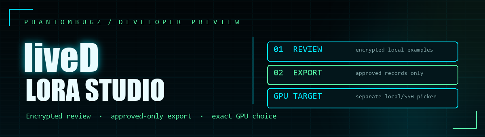
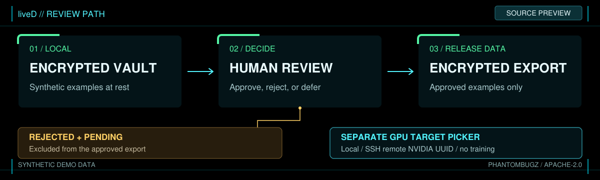

01
Local NVIDIA
Inspect the cards visible to this machine and choose a specific UUID.

Open source / developer preview
Build training examples through explicit human review.
Explore a real encrypted vault and approved-only export path with synthetic data. A separate picker discovers local and remote NVIDIA GPUs by UUID, so you can select the exact target for future training workflows.
Source previewApache-2.0Training pending
One-command source preview
With Python 3.12 or newer, run this command from the source checkout. It creates a dedicated preview environment, installs its pinned cryptography dependency, and uses disposable synthetic records.
python scripts/quickstart_preview.py
The demo creates one approved, one rejected, and one pending example. It checks that only the approved record enters the encrypted JSONL export and that sample response text is absent from the staged ciphertext files.

Exact target selection
The preview discovers NVIDIA devices on local Windows or Linux, or on a remote Linux machine reached through your existing SSH alias. It shows the UUID, device name, memory, compute capability, and driver, then requires an exact choice.
01
Inspect the cards visible to this machine and choose a specific UUID.
02
Use your configured SSH alias with strict host-key checking to inspect and select one remote UUID.
The picker reads hardware inventory only. It does not send a dataset, install CUDA, or start model training. An observed GPU still needs a compatible runtime, model recipe, and execution smoke before training can be called ready.
Release boundary
This page describes the public source preview. It includes no collected corpus, private vault, model weights, or deployment credentials. Use only material you are authorized to collect and review.
Read the current release status or explore Zombie Killer, our separate process-safety project preview.